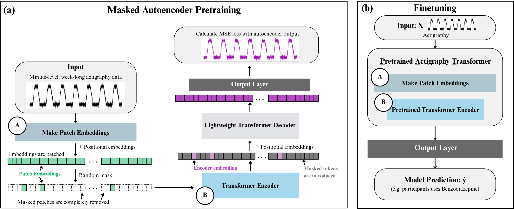
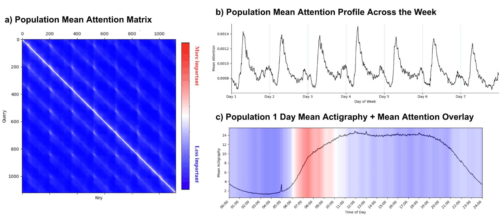

The Pretrained Actigraphy Transformer is an open-source transformer pretrained on week-long, minute-level actigraphy from 21,538 NHANES participants — evaluated on medication use, sleep, and psychiatric outcomes with interpretable attention.
Wearable movement data is collected by nearly all commercially available smartwatches and is a valuable resource for mental health research, reflecting fine-grained temporal behavioral trends. Despite its promise, the development of foundation models for health wearable modeling remains limited when compared to clinical image and text analysis.
We designed transformers with patch embeddings and used self-supervised masked autoencoder pretraining on minute-level, week-long actigraphy sequences to develop and investigate the Pretrained Actigraphy Transformer (PAT) — an open-source foundation model that combines week-long temporal modeling, psychiatric outcome evaluation, and full reproducibility on public data.
Pretrained on 21,538 U.S. participants from NHANES, PAT-L outperformed or matched the strongest non-foundation baseline on every task we evaluated — benzodiazepine and SSRI use, depression, and sleep abnormalities — with the largest gains on medication-use prediction. Beyond predictive accuracy, PAT provides interpretable attention maps highlighting periods of daily activity most important for each prediction.
Actigraphy has been used in clinical research since the 1970s, but the analytical tooling has not kept pace with what we now have for clinical text and images. Three main gaps motivated PAT.
Minute-level actigraphy captures circadian fragmentation, psychomotor slowing, and day-to-day rhythm variability. Classical feature-engineering pipelines remain transparent but rely on handcrafted, task-specific summaries that are sensitive to cohort and device differences.
CNNs have limited receptive fields; RNNs degrade over long windows. Most wearable deep learning has focused on second-to-minute activity recognition, leaving the multi-day rhythms and circadian structure that emerge only at minute-level resolution over week-long windows largely unmodeled.
Existing wearable foundation models tend to fall short on at least one of four fronts: (a) short temporal windows that miss multi-day behavior; (b) proprietary datasets researchers cannot access; (c) released code but withheld pretrained weights; (d) evaluation on activity recognition or general biomarkers rather than psychiatric and sleep outcomes. PAT is positioned to fill this gap.
PAT applies a Vision-Transformer-style patching scheme (ViT; Dosovitskiy et al., 2020) to week-long, minute-level actigraphy (10,080 timesteps). The sequence is divided into non-overlapping patches, each mapped to an embedding via a trainable linear projection (or 1D convolution in conv variants) and combined with fixed sine-cosine positional embeddings.

[ Drop static/images/method.png hereLargest gains on medication-use prediction, where psychotropic effects on sleep–wake rhythm and activity levels create actigraphy signatures the model can capture.
Unlike most deep learning models for wearable data, PAT provides built-in interpretability through attention weights — no SHAP or LIME required. Population-level attention from the benzodiazepine model shows repeated off-diagonal bands at 24-hour offsets and consistent peaks concentrated around the morning activity transition.
Quantitative confirmation: 24-hour-lag autocorrelation of the attention profile was consistently positive across participants (mean = 0.36, p < 0.0001), and attention was significantly enriched in a ±60-minute window around inferred wake transitions (mean enrichment ratio = 1.29, Wilcoxon p < 0.0001).

[ Drop static/images/attention.png herePAT was designed to be useful to the health researcher, not just benchmarked on a leaderboard. Every variant fits on a single consumer GPU and the full stack is open.
Every PAT variant fine-tunes on a free Google Colab GPU. PAT-M completes inference on a week-long sequence in ~35 ms — faster than LSTM (117 ms) and ConvLSTM (159 ms) baselines.
287K to 1.99M parameters across variants — PAT-S and PAT-M are comparable to or smaller than the ConvLSTM (1.76M) and 3D-CNN (790K) baselines they outperform.
Pretrained weights, training code, and the underlying NHANES dataset are all publicly available. Tutorial notebooks cover fine-tuning, explainability, and MAE pretraining.
Local fine-tuning means sensitive wearable data does not need to leave the institution where it was collected — simplifying privacy-preserving workflows.
@article{ruan2024pat,
title = {A Foundation Model for Wearable Movement Data in Mental Health Research},
author = {Ruan, Franklin Y. and Zhang, Aiwei I. and Oh, Jenny Y. and Jin, SouYoung and Jacobson, Nicholas C.},
journal = {IEEE Journal of Biomedical and Health Informatics (J-BHI)},
year = {2026},
url = {https://arxiv.org/abs/2411.15240}
}